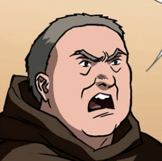
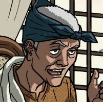

Project
CHARACTERS IN NOLI ME TANGERE
Juan Cristomo Ibarra y Magsalin (Ibarra)
He returned to the Philippines after his dad died.
He spent 7 years in Europe previously.
Maria Clara
She likes Ibarra.
She is looked after by Capitan Tiago.

Padre Damaso
Kinda a jerk.
He dislikes Ibarra.
Capitan Tiago
One of the first characters we meet.
He likes Ibarra.
Sisa
Her husband is abusive.
She cares deeply for her sons, Basilio and Crispin, and wants to still be with them in the future.
Basilio
Sisa is his mom.
Wants to be a doctor in the future.
Padre Salvi
Somehow WORSE than Damaso.
San Diego's Town Curate.
Crispin
Brothers with Basilio and son of Sisa.
Might've died.

Pilosopo Tasio
One of the smartest charcters in the story, despite his old age.
Pursued a life of knowledge after his wife and mom died.
Pedro
The abusive husband of Sisa, and abusive dad of Crispin and Basilio. He likes to gamble too.
So bad he doesn't deserve to have a picture.
This is a link to
References